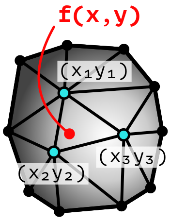

Пространственная интерполяция и вариография
Основы геоинформатики: лекция 8
Пространственная статистика
Пространственная статистика — анализ и моделирование пространственных явлений методами математической статистики.

Пространственная статистика
Пространственная статистика — анализ и моделирование пространственных явлений методами математической статистики.

Пространственные распределения
Моделирование пространственных распределений включает такие этапы как
- Пространственная интерполяция — восстановление поля распределения по ограниченному набору исходных данных.
- Исследование пространственной изменчивости поля распределения.
В геостатистическом анализе исследование изменчивости даёт статистическое обоснование метода интерполяции.

Пространственная интерполяция
Интерполяция в общем случае — это способ нахождения промежуточных значений величины по имеющемуся дискретному набору известных значений
Методы которые производят интерполяцию на основе заданной аналитической зависимости, называют детерминистическими.
Предполагается что анализируемые данные описываются некоторой аналитической функцией \(Z(\mathbf p, \lambda)\), где \(\mathbf p\) — точка, а \(\lambda\) — набор внутренних параметров модели.
Задача: на основе известных данных \(Z_i = Z(\mathbf p_i)\), измеренных в точках \(\mathbf p_i\), и другой информации об исследуемом явлении подобрать набор параметров \(\lambda\) и построить функцию \(Z(\mathbf p, \lambda)\) для всей исследуемой области \(S\).
Узлы интерполяции
- Как правило, оценка производится в узлах покрытия
- Наиболее часто используется растровое покрытие

Метод ближайшего соседа
Всю область интерполяции можно разбить с помощью диаграммы Вороного на зоны принадлежности к точкам наблюдений

Метод ближайшего соседа
В пределах каждой ячейки значение интерполируемой величины считается постоянным

Метод ближайшего соседа
Каждый узел интерполяции получает значение, равное значению ближайшей к нему точки наблюдений

Метод ближайшего соседа
Результирующая поверхность является кусочно-постоянной

На основе триангуляции
Для каждого треугольника находят уравнение плоскости:
\[Ax + By + Cz + D = 0\]
\[Z(x, y) = -\frac{1}{C}(Ax+By+D)\]
Искомые коэффициенты \(A, B, C, D\) находят решением уравнения: \[\begin{vmatrix} x - x_1 & y - y_1 & z - z_1 \\ x_2 - x_1 & y_2 - y_1 & z_2 - z_1 \\ x_3 - x_1 & y_3 - y_1 & z_3 - z_1 \end{vmatrix} = 0\]

На основе триангуляции
В пределах каждого треугольника — наклонный участок плоскости.

Характерная особенность — “изломы” изолиний при визуализации.
Обратно взвешенные расстояния
Значение показателя в произвольной точке получается как средневзвешенная сумма значений в исходных точках.
- Веса определяются обратно пропорционально расстоянию: чем дальше исходная точка, тем меньший вес она будет иметь:
\[Z(\mathbf{p}) = \begin{cases} \dfrac{\sum_{i = 1}^{n}{ w_i(\mathbf{p}) Z_i } }{ \sum_{i = 1}^{n}{ w_i(\mathbf{p}) } }, & \text{если } w_i \neq 0 \text{ для всех } i, \\ z_i, & \text{если } w_i = 0 \text{ для одного } i, \end{cases}\]
где \(w_i(\mathbf{p}) = | \mathbf p - \mathbf p_i | ^{-\beta}\) — весовая функция, \(n\) — общее количество точек с исходными данными.
Обратно взвешенные расстояния
\(\beta = 2\)

Обратно взвешенные расстояния
\(\beta = 3\)

Обратно взвешенные расстояния
\(\beta = 4\)

Обратно взвешенные расстояния
\(\beta = 5\)

Обратно взвешенные расстояния
\(\beta \rightarrow \infty\)

В предельном случае ОВР вырождается в ближайшего соседа.
Обратно взвешенные расстояния
Характерной особенностью метода является эффект “бычьих глаз”. При визуализации образуется множество замкнутых изолиний.
Причина
В каждой точке исходных данных существует локальный минимум или максимум.
Радиальные базисные функции
Радиальной называется функция, значение которой зависит только от расстояния между \(\textbf{p}\) и некой точкой \(\textbf{c}\):
\[\phi(\textbf{p}, \textbf{c}) = \phi\big(\lVert \textbf{p} - \textbf{c}\rVert\big)\] Интерполируемое значение находится как сумма значений функций с коэффициентами \(\lambda_i\):
\[Z(\textbf{p}) = \sum_{i=1}^n \lambda_i \phi\big(\lVert \textbf{p} - \textbf{p}_i\rVert\big)\]
\(\lambda_i\) находятся путем решения системы уравнений \(Z(p_i) = Z_i\);
Особенность
В отличие от метода ОВР весовые коэффициенты не зависят от \(\mathbf{p}\).
Радиальные базисные функции
Метод РБФ является одним из самых гибких благодаря широким возможностям выбора радиальной функции:
Мультиквадрики: \(\phi(r) = \sqrt{r^2 + \delta^2}\)
Обратные мультиквадрики: \(\phi(r) = 1 / \sqrt{r^2 + \delta^2}\)
Мульти-логарифмическая: \(\phi(r) = \ln(r^2 + \delta^2)\)
Сплайны минимальной кривизны: \(\phi(r) = r^2 \ln(r^2 + \delta^2)\)
Параметр \(\delta\) влияет на форму РБФ вблизи нулевых расстояний.
Внимание
Поверхность проходит через исходные точки, но может выходить за пределы исходного диапазона значений.
Радиальные базисные функции
Сплайн минимальной кривизны дает поверхность, обладающую максимально низкой кривизной между исходными точками.

Полиномиальная регрессия
Используется для глобальной аппроксимации тренда
\[P_1(x, y) = a + bx + cy\] \[P_{1.5}(x, y) = a + bx + cy + dxy\] \[P_{2}(x, y) = a + bx + cy + dxy + ex^2 + fy^2\] Неизвестные коэффициенты находятся по методу наименьших квадратов решением системы линейных уравнений относительно коэффициентов \(a\), \(b\) и т.д. Минимизируется функция потери:
\[L = \sum_{i=1}^{n} \Large[Z(x_i, y_i) - P_k(x_i, y_i) \Large]^2\]
Полиномиальная регрессия
Полином степени 1

Полиномиальная регрессия
Полином степени 2

Полиномиальная регрессия
Полином степени 3

Геостатистика
Геостатистика — раздел пространственной статистики, посвященный исследованию статистических закономерностей пространственных распределений (Matheron 1962).
Основная функция геостатистики — вариограмма:
\[ \mathbb E\big[Z(\mathbf{p}+\mathbf{h})-Z(\mathbf{p})\big]^2 = 2\gamma(\mathbf{h}), \]
где \(\mathbb E\) — математическое ожидание, \(\mathbf h\) — вектор.
Особенности
Вариограмма показывает насколько данные в точках становятся непохожими при увеличении расстояния между ними.
В изотропном случае вектор \(\mathbf h\) можно заменить на его длину \(|\mathbf h|\).
Вариограммное облако
Квадрат разности значений как функция от расстояния
Точка на графике соответствует паре точек на местности.
Эмпирическая вариограмма
Эмпирическая вариограмма рассчитывается путем разбения вариограммного облака на интервалы расстояний — лаги — и подсчета среднего значения в каждом лаге:

Эмпирическая вариограмма
\[\widehat{\gamma} = \frac{1}{2N_h} \sum_{|\mathbf{p}_i - \mathbf{p}_j| \approx h} \big(Z_i - Z_j\big)^2\]

Интерпретация вариограммы
- Вариограмма — квадрат разницы значений. Чем она больше, тем сильнее различаются точки по величине показателя.
- Меньшие значения \(\gamma\) свидетельствуют о большей похожести точек. Следовательно, вес таких точек при интерполяции должен быть выше.
- Пока вариограмма растет, существует зависимость между значениями в точке. Даже для далеких \(\mathbf p_i\) мы можем сказать, насколько они в среднем отличаются от \(\mathbf p\). Это значит, что их веса должны быть ненулевыми.
- Если вариограмма вышла на плато, то зависимость утрачена, и данными, расположенными за пределами радиуса корреляции, можно пренебречь, а их веса будут близки к нулю.
Модель вариограммы
Модель вариограммы управляется тремя параметрами: эффект самородка (nugget), радиус корреляции (range) и плато (sill).

Сферическая модель

Данная модель достигает плато в точке \(h = a\).
За пределами радиуса корреляции зависимость отсутствует
Экспоненциальная модель

- Данная модель достигает плато асимптотически.
- В точке \(h = a\) достигается \(95\%\) уровня плато.
Гауссова модель

- Данная модель достигает плато асимптотически.
- В точке \(h = a\) достигается \(95\%\) уровня плато.
Степенная модель

- Зависимость присутствует на всех расстояниях: \(a \rightarrow \infty\)
- Как правило, это означает наличие тренда в данных
Кригинг
Кригинг — это геостатистический интерполятор вида (Krige 1951):
\[Z(\mathbf p_0) = \sum_{i} \lambda_i Z(\mathbf p_i) + \lambda_0\]
В случае обычного кригинга веса определяются на основе вариограммы путем решения системы линейных уравнений:
\[ \begin{cases}\sum_j \lambda_j \gamma_{ij} - \mu = \gamma_{i0},\color{gray}{~i = 1,...,N,}\\ \sum_i \lambda_i = 1 \end{cases}, \] при условии \(\lambda_0 = 0\), где \(\gamma_{ij} = \gamma(\mathbf p_i - \mathbf p_j)\), \(p_0\) — интерполируемая точка, \(\mu\) — множитель Лагранжа, возникающий из-за дополнительного условия \(\sum_i \lambda_i = 1\).
Кригинг
Оценка кригинга — результат интерполяции методом кригинга. По виду похожа на метод РБФ, но статистически обоснована.

Кригинг
Дисперсия кригинга \(\sigma = \sum_{i}\lambda_i\gamma_{i0} - \mu\) — неопределенность оценки, которая напрямую зависит от плотности исходных данных.

Словарик
Пространственная статистика
Пространственная зависимость
Пространств. гетерогенность
Пространственная интерполяция
Ближайший сосед
Обр. взвешенные расстояния
Радиальные базисные функции
Полиномиальная регрессия
Геостатистика
Вариограмма
Кригинг
Spatial statistics
Spatial dependency
Spatial heterogeneity
Spatial inteprolation
Nearest neighbor
Inverse distance weighted
Radial basis functions
Polynomial regression
Geostatistics
Variogram
Kriging
Библиография
Krige, Daniel. 1951. «A Statistical Approach to Some Basic Mine Valuation Problems on the Witwatersrand». J. Of the Chem., Metal. And Mining Soc. Of South Africa 52 (6): 119–39.
Matheron, Georges. 1962. Traité de géostatistique appliquée. Paris: Technip.